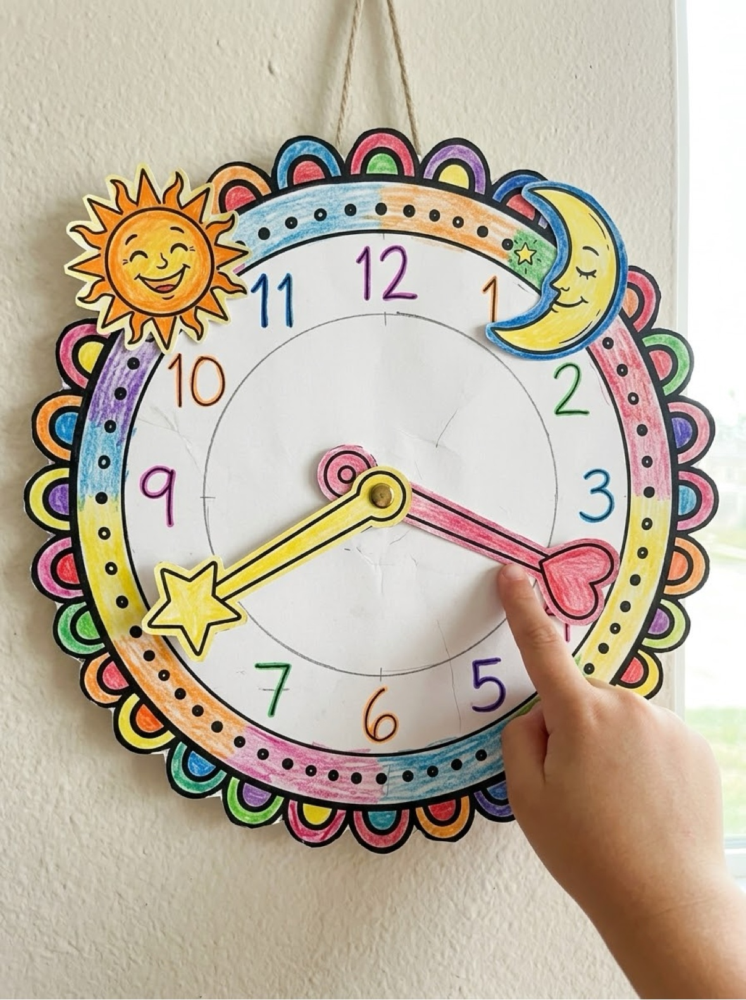
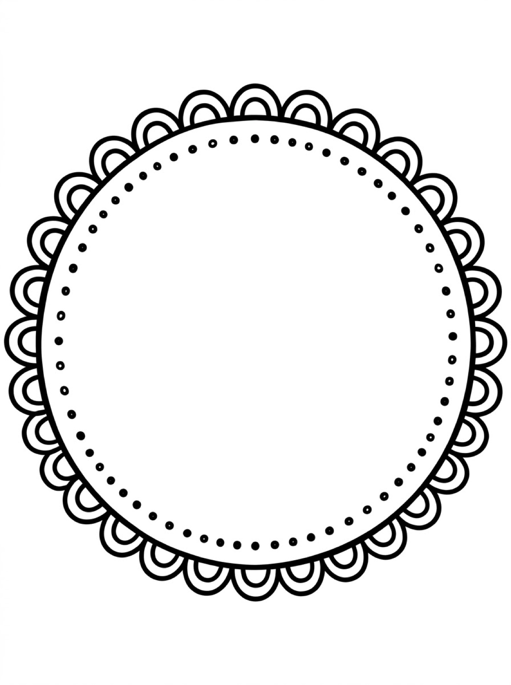
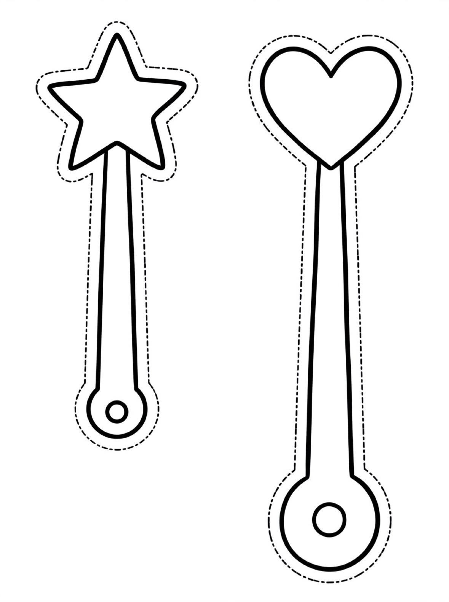
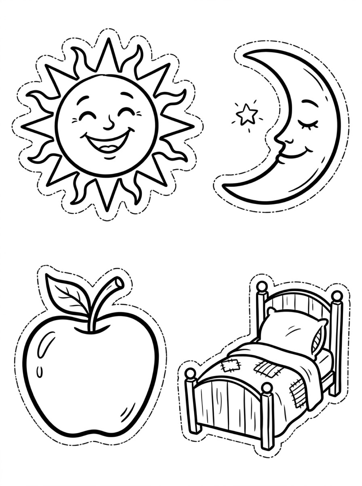

Clock Craft Activities Free Printable Clock Crafts For Kids
Build a clock you can actually use with these free printable clock craft activities. Kids cut, assemble, and decorate their own paper clock — then move the hands to practice telling time.

Quick Answer
This free printable clock craft activity is designed for toddlers and preschoolers ages 2-5. The worksheet includes hands-on exercises that build early learning skills through play. Download and print at home with no signup needed — no account required, just print and start learning.
At a Glance
- Ages: 2–5
- What you get: a free printable paper clock craft with moving hands, for telling-time practice, plus add-on sheets — a frame, hands and markers
- Supplies: cardstock, scissors, and a brad or paper fastener for the hands
- Cost: Free — no signup, no payment, just download and print
✂️ Build Your Own Clock
Use these clock crafts to help your child make a real working paper clock with moving hands, then practice setting and reading different times.
Free Clock Craft Activities
Your Free Printable Is Ready!
Download the clock craft activities printable below and print it at home — no signup needed.
🎨 Make It Yours: Clock Add-Ons
Colour, cut out, and stick on a scalloped frame, movable hands, and markers to turn the paper clock into your child's own design.

Download Your Free Clock Frame
A scalloped frame and minute-dot ring to colour and glue around your clock face.
⬇️ Download Free Clock Frame 🖨️ Print🎁 Free printable for toddlers and preschoolers

Download Your Free Clock Hands
Two big hands to colour and cut out — fix them in the centre with a brad.
⬇️ Download Free Clock Hands 🖨️ Print🎁 Free printable for toddlers and preschoolers

Download Your Free Clock Markers
A sun, moon, apple and bed to colour and stick around your clock.
⬇️ Download Free Clock Markers 🖨️ Print🎁 Free printable for toddlers and preschoolers
How To Use These Activities
Print the clock and add-on sheets on cardstock. Cut out and assemble the clock, then colour and cut out the frame and glue it around the face. Cut out the hands and fix them through the centre with a brad so they move. The small hand with the star is the hour hand. The long hand with the heart is the minute hand. Stick the sun, moon, apple, and bed markers wherever you like, then practise setting and reading times together.
Why Build A Clock?
Building a clock makes time hands-on. Moving the hands themselves helps children understand how hours and minutes work far better than looking at pictures.
🎁 Keep Exploring Free Learning Activities
Discover more printable activities, toddler resources, and learning ideas created for busy parents.
🎁 View All Free Resources❓ Clock Craft Activities FAQs
Is the Clock Craft Activities printable free?
Yes — every printable on MomYouNeedThis is 100% free to download and print. No signup, no payment, just tap the download button.
How do I download and print it?
Tap the download button on this page to save the file, then print it on regular paper with any home printer. Cardstock makes extra-durable pages for little hands.
What does my child learn from this activity?
Clock crafts build scissor skills, assembly, and deep time understanding. A homemade clock becomes a favorite tool for ongoing practice.
Which hand is the hour hand?
The small hand with the star is the hour hand. The long hand with the heart is the minute hand.
🔗 More Free Printables You’ll Love
Pair this printable with more free learning activities from the MomYouNeedThis library.
- 🕐 O'Clock Time ActivitiesLearn to read simple clocks showing the hour.
- ⏰ Telling Time ActivitiesExplore all telling time activities.
- 🔤 Alphabet Coloring PagesFree A to Z alphabet coloring printables for toddlers and preschoolers.
- 🎏 Free 5-Minute Toddler ActivitiesQuick learning activities for busy little ones.